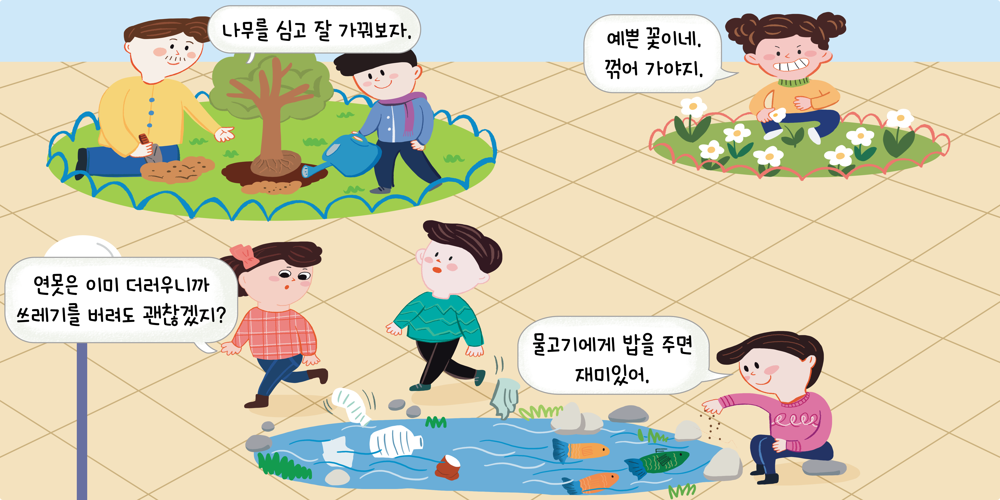
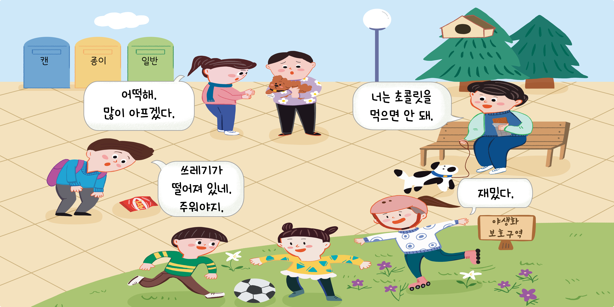

- 그림 1
- 그림 2
- 물음
-

-

-
-
생명을 존중하는 행동과 그렇지 못한 행동은 무엇인가요?꽃을 꺾거나 연못에 쓰레기를 버리는 것,
야생화 보호 구역에 들어가는 것은
생명을 존중하지 않는 행동입니다. -
평소 내 모습과 비슷한 모습을 찾아볼 수 있나요?쓰레기를 줍는 모습입니다.
-
생명을 존중하는 행동을 하려면 어떤 마음을 지녀야 할까요?
생명을 그 자체로 소중히 여기는 마음이 필요합니다.
다른 생명에게 도움이 되는 행동을 하려는 마음가짐이 필요합니다.
-